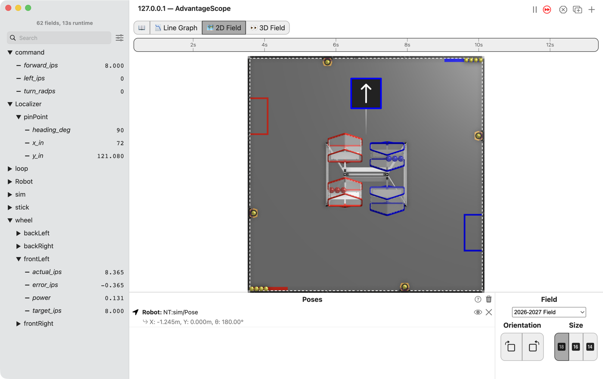
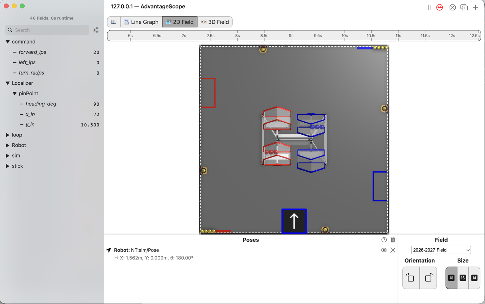

L190: ask the wheels for a speed¶

AdvantageScope’s 2D Field with the robot near the top of the field, its arrow pointing up, and the list showing command/forward_ips at 8, pinPoint/y_in at 121.080, and wheel/frontLeft with target_ips at 8, actual_ips at 8.365, error_ips at -0.365 and power at 0.131.¶
Full stick means 40 inches per second, not full power. The drivetrain measures how fast each wheel turns and makes up the difference, on a fresh battery or a flat one, on the flat or up a slope.
Before you start.
L180 is done.
AdvantageScope is installed on the same laptop. No gamepad is needed until the last step.
The robot, the Driver Station, a gamepad, about 3 m of clear floor, and something gentle to drive up, like a folded mat, for the last step.
The steps¶
L190S010: copy the two starters into mytry¶
This lesson has two files, as L110 did. One is the OpMode. The other is the drivetrain, which turns a speed into a power.
Copy. In lessons, click L190SpeedDriveTrain once and copy it. Click mytry once and
paste. In the Copy Class box, click OK. If Android Studio asks whether to add the file to
Git, click Add. Do the same for L190VelocityDriveOpMode.
Check.
mytryholdsL190SpeedDriveTrainandL190VelocityDriveOpMode.
L190S020: switch your copy on¶
Change. In L190VelocityDriveOpMode, delete the line @Disabled, under the comment that names
this step.
Check.
Under the step’s comment, the next line reads
// 'public' so the robot can run this OpMode. 'public' allows access from any code.
L190S030: make room for the drivetrain¶
Change. Near the top of the class, find the comment that names this step. Under it, type:
// When on L190S030, see
// https://msb-stitt.github.io/ftc31459-26-27-biobuzz/guide/tasks/l190.html#l190s030
// for what to do here.
L190SpeedDriveTrain drivetrain;
Check.
The line has no red underline.
L190SpeedDriveTrainis inmytrytoo, so it needs no import.
L190S040: hand the drivetrain to the follower¶
Change. In init(), find the comment that names this step. Under it, type the first line
below. Then change initAfter(); to initAfter(drivetrain);:
// When on L190S040, see
// https://msb-stitt.github.io/ftc31459-26-27-biobuzz/guide/tasks/l190.html#l190s040
// for what to do here.
drivetrain = new L190SpeedDriveTrain(hardware);
initAfter(drivetrain);
This is L110S050 again, with the new drivetrain.
Check.
Neither line has a red underline.
L190S050: turn the sticks into speeds¶

AdvantageScope’s 2D Field with the robot at the bottom middle of the field, its arrow pointing up, and the list showing command/forward_ips at 20, left_ips and turn_radps at 0, and pinPoint at x 72, y 10.500 and heading 90, with no wheel folder.¶
MAX_IPS is 40, in inches per second. MAX_TURN_RADPS is pi radians per second, half a turn each
second. Both are near the top of the class.
Change. In loop(), find the comment that names this step. Under it are three lines that end
in = 0;. Change each 0 as below. Then, under the three publish lines, type the last two lines:
// When on L190S050, see
// https://msb-stitt.github.io/ftc31459-26-27-biobuzz/guide/tasks/l190.html#l190s050
// for what to do here.
double forwardInPerS = deadband(-leftStickY, band) * MAX_IPS;
double strafeInPerS = deadband(-leftStickX, band) * MAX_IPS;
double turnRadPerS = deadband(-rightStickX, band) * MAX_TURN_RADPS;
Tracker.publish("command/forward_ips", forwardInPerS);
Tracker.publish("command/left_ips", strafeInPerS);
Tracker.publish("command/turn_radps", turnRadPerS);
double[] target = WheelTargets.forMecanum(forwardInPerS, strafeInPerS, turnRadPerS, Constants.turnRadiusInches);
drivetrain.setCommandedWheelSpeeds(target[0], target[1], target[2], target[3]);
The minus signs are the ones from L030. A stick pushed up reads less than 0.
WheelTargets.forMecanum works out how fast each wheel has to turn for the robot to move like
that. It hands back an array, front left first, then front right, back left and back right.
turnRadiusInches is how far each wheel sits from the middle of the robot.
WheelTargets and Constants turn red. Hold the mouse over each one until a box offers Import
class, and click it. The box for Constants names
org.firstinspires.ftc.teamcode.pedro.Constants.
Simulator. In the Terminal, run:
./gradlew :TeamCode:simRun --args="mytry.L190VelocityDriveOpMode --left_stick_y=-0.5"
AdvantageScope. Connect to the simulator as in L020, click 2D Field, and open the command
folder. Then open Localizer and pinPoint.
Check.
forward_ipsreads 20, half of 40.The robot does not move, and
y_instays at 10.5.
The OpMode asks for a speed, but setCommandedWheelSpeeds in your drivetrain is still empty.
L190S060: turn a speed into a power¶

The loop drawn once round: the stick asking for 40 in/s, the feedforward guess at the power, the encoder’s measured speed coming back, and the error being added in.¶
Open L190SpeedDriveTrain. It extends CorbelsMecanum, so it has everything L180’s drivetrain
had. setCommandedWheelSpeeds puts the four speeds into the array wanted. Each wheel gets its
power from two parts added together.
Feedforward is a guess, made before anything is measured.
Constants.powerPerInchPerSecondis the power one inch per second needs, so the guess gets most of the way there at once.Feedback is the correction.
measuredSpeeds.all()reads how fast each wheel really turns. The difference between wanted and measured, timesVELOCITY_KP, is added on.
The guess is always a little off, and the correction only grows once the wheel is off its speed. Together they get there and stay there.
A for loop runs the lines inside its braces once for each wheel. i starts at 0 and goes up by
1 each time, while it is less than 4. So wanted[i] is wanted[FL] the first time round, then
FR, BL and BR.
Change. Press Ctrl+C in the Terminal to stop the simulator. In setCommandedWheelSpeeds, find
the comment that names this step. Under it, type:
// When on L190S060, see
// https://msb-stitt.github.io/ftc31459-26-27-biobuzz/guide/tasks/l190.html#l190s060
// for what to do here.
double[] measured = measuredSpeeds.all();
double[] powers = new double[4];
for (int i = 0; i < 4; i++) {
double feedforward = Constants.powerPerInchPerSecond * wanted[i];
double feedback = VELOCITY_KP * (wanted[i] - measured[i]);
powers[i] = clampToPower(feedforward + feedback);
}
setCommandedWheels(powers[FL], powers[FR], powers[BL], powers[BR]);
publishWheelSpeeds(wanted, measured, powers);
Android Studio types the } of the for loop for you, when you press Enter after the {.
clampToPower keeps each power between -1 and 1. setCommandedWheels sends the four powers to
the wheels, as in L110. publishWheelSpeeds puts each wheel’s numbers in the wheel folder.
Constants turns red. Import it as in L190S050.
Simulator. Run the command again, with the stick pushed less so the robot stays on the field longer:
./gradlew :TeamCode:simRun --args="mytry.L190VelocityDriveOpMode --left_stick_y=-0.2"
AdvantageScope. Connect, and open wheel, then frontLeft.
Check.
forward_ipsandtarget_ipsread 8.The robot drives up the field.
On the first loop
powerreads 0.198: the guess, 0.134, plus the correction for a wheel not yet turning.
actual_ips climbs to about 8 in under half a second and settles a little above 8, so error_ips
settles a little below 0. power drops to about 0.13 and stays there. The guess was a little too
much for the simulated robot, and the correction takes off what it needs.
L190S070: drive it up something¶
Robot. Stop the simulator. Send the code, run L190 Velocity Drive from the Driver Station,
and watch it in AdvantageScope.
Check.
Drive on the flat first.
Then drive straight up the mat, with the stick held in the same place. The robot slows a little at the foot of the slope and then picks back up.
In AdvantageScope,
actual_ipsdips belowtarget_ips, then climbs back, andpowerrises to do it.
No gamepad. The runs above need none. With --pad, a driver can push the stick and watch the
numbers.
If it didn’t, and every LessonsTest.l190_ test fails with this, nothing was published under
wheel/:
NullPointerException: Cannot invoke "java.lang.Double.doubleValue()" because the return value of "java.util.Map.get(Object)" is null
L190S060 is not typed yet, or publishWheelSpeeds is missing. The test asks the log for a number
nobody wrote. The same message comes when the drivetrain.setCommandedWheelSpeeds line in
L190S050 is missing.
If it didn’t, and a test fails with one of these, the line named is the one to look at. Each was planted and run.
full stick asks for a speed, in inches per second expected:<40.0> but was:<0.0>: the three speeds are still0.expected:<40.0> but was:<1.0>:* MAX_IPSis missing. A full stick is 1, and 1 inch per second is very slow.expected:<40.0> but was:<-40.0>: the minus sign in front ofleftStickYis missing.l190_whenTheWheelsAreUpToSpeedOnlyTheFeedforwardRemainsfails with it, sayingexpected:<0.0> but was:<-80.0>.turning counter-clockwise drives the left side backwards, on its own: the minus sign in front ofrightStickXis missing.expected:<0.9878391425450086> but was:<0.6678391425450086>: the feedback is not added. The difference is0.008 * 40.expected:<0.9878391425450086> but was:<0.32>: the feedforward is not added. A wheel already at speed then gets no power at all.expected:<0.9878391425450086> but was:<0.34783914254500864>: the error is the wrong way round,measured[i] - wanted[i].measured speed matches the command expected:<40.0> but was:<0.0>:measuredis not read frommeasuredSpeeds.all().
Two mistakes pass every test. Both were run in the simulator with --left_stick_y=-0.2, and in
both the wheel numbers were right while the robot stood still at x 72 in, y 10.5 in.
setCommandedWheelsis missing, so the powers are worked out and logged but never sent.initAfter();was left as it was, so the follower holds a stand-in and never sends the powers on, as in L110.
A number in the log is what the code decided, not what the robot did.
If it didn’t, and on the robot it is slower than target_ips everywhere,
powerPerInchPerSecond is off for this robot. L117 measures it. If turning is the wrong speed
while driving straight is right, turnRadiusInches is 8 in, and this robot may not be. L195
measures it.
What you just did. A power is an instruction, and a speed is a result. Every lesson before this one sent instructions. This one states the result it wants, measures, and corrects.
Where next. L195 measures the numbers this lesson trusted: how far a wheel goes for each encoder count, and the turn radius.